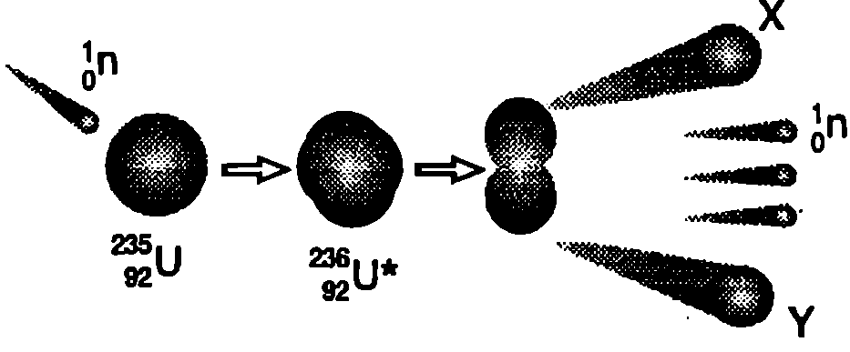
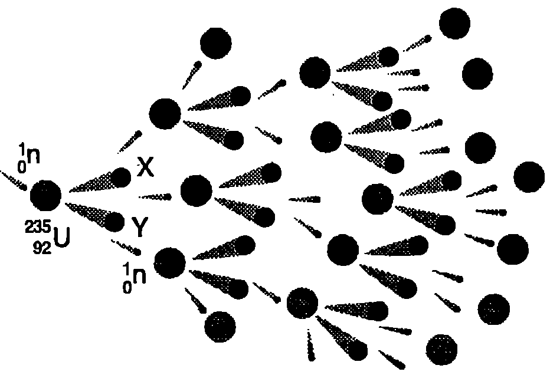
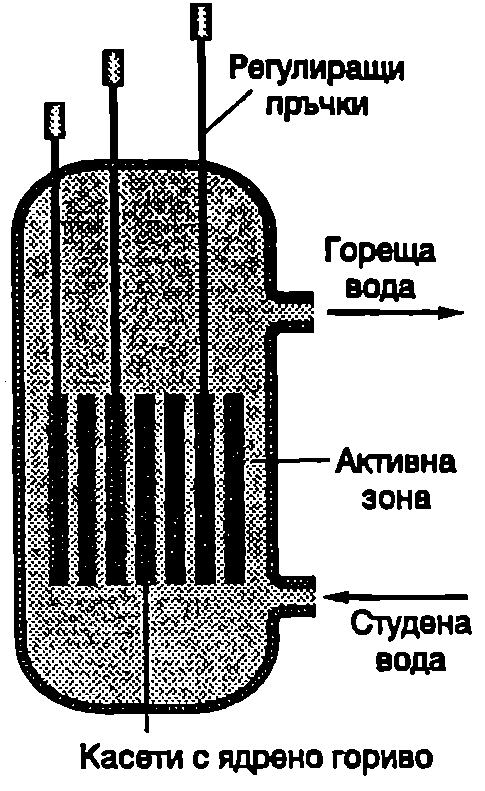

При $\alpha$- и $\beta$-разпадането става спонтанно превръщане на един химичен елемент в друг. Съставът на ядрата може да се измени и по друг начин: при удар на атомно ядро с протон, неутрон, $\alpha$-частица или друго ядро. Такива удари, които предизвикват изменения в състава на атомните ядра, се наричат ядрени реакции. Първата ядрена реакция в лабораторни условия е осъществена през 1919 година в Англия от новозенландския физик Ърнест Ръдърфорд (1871-1937). Той насочва сноп от $\alpha$-частици към газова среда от азот и наблюдава отделянето на протони (ядра на водорода). Ръдърфорд стига до извода, че за да се изпълни законът за запазване на електричния заряд, трябва ядрата на азота да се превръщат в ядра на кислорода чрез ядрената реакция $$^4_2\mathrm{He}+^{14}_7\mathrm N\to ^{17}_8\mathrm O+^1_1\mathrm H.$$
Обърнете внимание, че при реакцията се запазва както електричният заряд, така и броят на нуклоните (масовото число). В случая електричният заряд се определя само от броя на протоните: той е $Z=2+7=9$ преди реакцията и $Z= 8+1= 9$ след реакцията. Масовото число е $A = 4 + 14 = 18$ преди реакцията и остава същото ($A = 17 + 1 = 18$) след нея. Тъй като при всяка ядрена реакция се запазва електричният заряд и масовото число, тези закономерности се използват за определяне вида на получените ядра.
При някои реакции се получават стабилни ядра, а при други нестабилни. Чрез ядрени реакции в лабораторни условия се произвеждат редица радионуклиди, намиращи приложение в медицината и биологията. Например така се получава изотопът кобалт-60, чието $\gamma$-излъчване се използва за поразяване на раковите клетки.
Делене на ядрата на урана
Ядрени реакции, при които тежки ядра се разцепват на две по-леки ядра и се отделя енергия, се наричат реакции на делене. Деленето на ядрата на урана е открито в края на 1938 година от германските физици Ото Хан и Фриц Щрасман. Чрез химичен анализ те установяват, че при облъчване на урана с неутрони се образуват елементи от средата на периодичната система. Това откритие, направено в Берлин в навечерието на Втората световна война, поставя началото на ядрената ера в историята на човечеството. По време на войната в САЩ се събира цяла плеяда блестящи физици, повечето емигранти от Европа, която усилено разработва ядрените технологии. През 1942 година под ръководството на италианския физик Енрико Ферми (1901-1954) в Чикаго е пуснат в действие първият ядрен реактор. На 16 юли 1945 година на полигона в щата Ню Мексико, САЩ, е взривена атомна бомба. Следват трагедията при атомните бомбардировки на японските градове Хирошима и Нагасаки, надпреварата в ядреното въоръжаване и мирното използване на атомната енергия в наши дни.
Деленето на урана се предизвиква от неутрони с малка кинетична енергия (по-малка от 1 eV). Такива неутрони се наричат бавни или топлинни, защото кинетичната им енергия е сравнима с енергията на хаотичното топлинно движение на молекулите на газовете при нормални условия. Ядрото поглъща един неутрон и преминава във възбудено състояние (Фиг. \ref{fig:109.1}). В това състояние то е крайно нестабилно и след много кратко време (около $10^{-12}$ s) се разцепва на две приблизително еднакви части (продукти на деленето), при което се отделят два или три неутрона. Деленето на изотопа $^{235}{92}U$ се записва така: $$^1_0n+^{235}{92}\mathrm U\to X + Y + \text{неутрони},$$

`Фиг. 109.1`
където с $n$ е означен неутронът, предизвикващ деленето, а $X$ и $Y$ са продуктите на деленето изотопи на химични елементи от средата на Менделеевата таблица (барий, криптон, ксенон, стронций и др.) Тези по-леки ядра имат с около 1 MeV по-голяма специфична енергия на връзката в сравнение с тежкото изходно ядро на урана (вж. графиката от Фиг. \ref{fig:106.2} на стр. 266). Това означава, че в тях нуклоните са по-здраво свързани и имат по-малка маса на покой. Следователно масата и енергията на покой намаляват: част от енергията на покой на урана се превръща в кинетична енергия на продуктите на деленето. При деленето на едно ядро се отделя около 200 MeV енергия. Това е огромна енергия. За сравнение ще посочим, че при делене на всички ядра, съдържащи се в 1 kg $^{235}_{92}\mathrm U$, се освобождава толкова енергия, колкото при изгарянето на 3 000 000 kg въглища!
Ядрени реактори
Деленето на урана се предизвиква от един неутрон, а поражда средно 2,5 неутрона (в зависимост от вида на ядрата продукти $X$ и $Y$ в някои случаи се отделят 2 неутрона, а в други — 3 неутрона). Ако уранът е само малко късче, тези неутрони излитат от повърхността му и процесът се прекратява. Когато масата на урана обаче над хвърля определена стойност, наречена критична маса, неутроните не излитат навън, а предизвикват делене на нови ядра, при което пак се отделят неутрони и т.н. — протича верижна реакция на делене на урана (Фиг. \ref{fig:109.2}). Ако не се контролира, верижната реакция на делене за кратко време обхваща много голям брой ядра и води до ядрен взрив, при който се отделя огромна енергия. Подобни реакции се осъществяват при взривяване на атомни бомби.

Верижна реакция.
`Фиг. 109.2`

`Фиг. 109.3`
Устройствата, в които се осъществяват управляеми реакции на делене на ядрата, се наричат ядрени реактори. Природният уран съдържа само около 0,7% от изотопа $^{235}{92}\mathrm U$, а останалите 99,3% са от изотопа $^{238}{92}\mathrm U$, при който ядрена реакция на делене се осъществява много рядко. Вместо да се дели, той поглъща неутрони и се превръща в изотоп на химичния елемент плутоний. Затова реакторите използват за ядрено гориво обогатен уран, в който концентрацията на изотопа $^{235}{92}\mathrm U$ е няколко процента. В реакторите от типа ВВЕР, с каквито е снабдена атомната електроцентрала (АЕЦ) в Козлодуй, ядреното гориво е пресован уранов диоксид, поставен в специални цилиндрични касети. Касетите се разполагат в т.нар. активна зона на реактора (Фиг. \ref{fig:109.3}). В около 1/3 от тях се вкарват подвижни регулиращи пръчки, съдържащи химичния елемент бор (В). Борът поглъща част от неутроните и по този начин се контролира скоростта на верижната реакция. Реакторът се охлажда от течаща под голямо налягане (около 160 atm) вода, която поглъща отделеното при верижната реакция количество топлина и го извежда извън реактора. След това топлината се използва за производство на електроенергия. Този тип реактори се наричат водно-водни, защото водата изпълнява още една функция забавя неутроните. Неутроните, получени при деленето на урана, имат голяма кинетична енергия (около 2 MeV). Вероятността ядро $^{235}{92}\mathrm U$ да захване такъв бърз неутрон е много малка. Колкото по-малка е енергията на неутроните, толкова по-лесно те се захващат от ядрата. Затова неутроните трябва да бъдат забавени преди да предизвикат делене на други ядра. Това става в резултат на ударите с леките ядра на водорода от водните молекули: при ударите неутроните отдават на водорода по-голямата част от енергията си.
Деленето на ядрата на урана е съпроводено с мощно $\gamma$-излъчване. Освен това голяма част от продуктите на деленето са радиоактивни. Затова е много важно да се осигури надеждна радиационна защита около активната зона на реактора. Тази защита включва прегради от стомана, вода и бетон, които поглъщат радиоактивни те лъчения. При реакторите на АЕЦ Козлодуй са предвидени три последователни защитни бариери за околната среда от радиоактивните продукти. Въведена е автоматична система за контрол на радиоактивните лъчения, както в самата централа, така и в 110-километровата зона около нея. След аварията в атомната електроцентрала в Чернобил (Украйна) през 1986 година се обръща изключително голямо внимание на безопасността на ядрените реактори. Освен при авария, опасност за околната среда може да възникне при неправилно съхраняване на радиоактивните отпадъци. Ядрените реактори периодично се зареждат със свежо гориво. Вече използваното гориво съдържа голямо количество радиоактивни вещества. То се подлага на преработка, а получените радиоактивни отпадъци се “погребват” в специално построени за тази цел хранилища. Вземат се мерки, за да се изключи възможността радиоактивни отпадъци да попаднат в почвата и водата.
Ядрен синтез
Да разгледаме отново графиката от Фиг. \ref{fig:106.2} на стр.266, изразяваща специфичната енергия на връзката на атомните ядра като функция на масовото им число. Специфичната енергия на връзката има най-голяма стойност за ядрата с масово число около 60. Следователно както в тежките, така и в леките ядра нуклоните са по-слабо свързани, отколкото в ядрата от средата на периодичната система. Затова са възможни два противоположни процеса, при които се отделя енергия:
-
Делене на тежки ядра, което вече разгледахме.
-
Сливане на две леки ядра. Процесът, при който две леки ядра се сливат и се образува ядро с по-голямо масово число и по-голяма енергия на връзката, се нарича реакция на ядрен синтез. Тъй като общата маса на получените след ядрения синтез ядра и частици е по-малка от общата маса на изходните ядра, процесът на сливане е съпроводен с отделяне на енергия: част от енергията на покой на изходните ядра се превръща в кинетична енергия на продуктите на ядрения синтез.
Интерес за ядрената енергетика представляват преди всичко реакциите на ядрен синтез, в които участват изотопите на водорода деутерий ($^2_1\mathrm H$) и тритий ($^3_1\mathrm H$): $$^2_1\mathrm H+^2_1\mathrm H\to ^3_2\mathrm{He}+ ^1_0n,\quad Q = 3,!27~\mathrm{MeV};$$ $$^2_1\mathrm H+^2_1\mathrm H\to ^3_1\mathrm{H}+ ^1_1\mathrm{H},\quad Q = 4,!03~\mathrm{MeV};$$ $$^2_1\mathrm H+^3_1\mathrm H\to ^4_2\mathrm{He}+ ^1_0n,\quad Q = 17,!59~\mathrm{MeV};$$
Най-перспективна в енергетично отношение е третата ядрена реакция, тъй като при нея се освобождава най-голяма енергия (17,59 MeV). 80% от освободената енергия се отнася от излъчения при реакцията неутрон (кинетична енергия на неутрона), а останалите 20% преминават в кинетична енергия на полученото след сливането хелиево ядро ($\alpha$-частица).
Термоядрен синтез
Сливане на две положително заредени ядра е възможно само ако те имат достатъчно голяма кинетична енергия, за да преодолеят електричните сили на взаимно отблъскване и да се доближат на такива малки разстояния (около $10^{-14}$ m), на които ядрените сили на привличане стават по-големи от силите на електрично отблъскване. Необходимата кинетична енергия може да се получи чрез загряване на средата, съдържаща леки ядра, до неколкостотин милиона градуса. При такива огромни температури атомите са напълно йонизирани и веществото се намира в плазмено състояние: представлява смес от свободни електрони и атомни ядра с голяма кинетична енергия. В този случай процесът на сливане на леките ядра се нарича термоядрен синтез.
Управляем термоядрен синтез
Устройствата, с които се получава енергия чрез управляеми реакции на термоядрен синтез, се наричат термоядрени реактори. Термоядрените реактори, използващи за гориво деутерий и тритий, имат редица предимства пред реакторите, в които се осъществява делене на урана. Преди всичко тяхното гориво е много по-евтино и практически е в неограничено количество. Деутерият се съдържа в обикновената вода: от 1 m$^3$ вода може да се извлече около 30 g деутерий. Необходимият за реакцията тритий се получава като страничен продукт при работата на самия реактор (вж. зад. 1). Освен това в термоядрените реактори се създават много по-малко радиоактивни продукти и опасността за радиоактивно замърсяване на околната среда е минимална.
Практическото използване на термоядрения синтез за производство на електроенергия обаче е все още нерешен проблем. За протичане на управляем термоядрен синтез в реактора трябва да са изпълнени три условия:
-
Създаване на високотемпературна плазма.
-
Поддържане на голяма плътност на плазмата, за да се увеличи броят на ударите между ядрата.
-
Задържане на плазмата достатъчно дълго време, за да се осъществи сливането на леките ядра в резултат на удари те между тях. При това плазмата не трябва да се допира до стените на реактора. При допир плазмата се охлажда, а веществото на стените се изпарява и термоядреният синтез става невъзможен.
Термоядрен синтез в Слънцето и звездите
Веществото в недрата на Слънцето и звездите се намира в състояние на високотемпературна плазма с голяма плътност, в която са налице условията за протичане на термоядрен синтез. Основното ядрено гориво за Слънцето е водородът, който се превръща в хелий и се отделя енергия. Предполага се, че това става по т. нар. протон-протонен цикъл. Един от възможните варианти на този цикъл включва следните ядрени реакции: $$^1_1\mathrm H+^1_1\mathrm H\to ^2_1\mathrm{H}+ ^0_1e+\nu$$ $$^1_1\mathrm H+^2_1\mathrm H\to ^3_2\mathrm{He}+ \gamma$$ $$^1_1\mathrm H+^3_2\mathrm{He}\to ^4_2\mathrm{He}+ ^0_1e+\nu$$
В резултат на протон-протонния цикъл четири протона (ядра на водорода) се превръщат в едно хелиево ядро и се отделят два позитрона ($^0_1e$), две неутрино ($\nu$), един $\gamma$-квант и голямо количество енергия ($Q = 26$ MeV). Най-бавно протича първата реакция от цикъла, благодарение на което отделянето на ядрена енергия става постепенно: пресмятанията показват, че Слънцето ще свети още 4 милиарда години преди да изчерпи ядреното си гориво.
Превръщането на водорода в хелий може да се извършва и по т.нар. въглеродноазотен цикъл, при който въглеродът играе ролята на катализатор на ядрените реакции, а азотът е междинен продукт.
И при двата цикъла се образува неутрино, което почти безпрепятствено преминава през външните слоеве на Слънцето и се разпръсква в космическото пространство. Интересно е да се отбележи, че в проведените досега опити за регистриране на слънчевите неутрино в установено, че до Земята достигат 3 пъти по-малко неутрино, отколкото предвижда термоядреният модел на Слънцето. Едно от възможните обяснения е, че по пътя си към Земята част от слънчевите неутрино се превръщат в други видове неутрино, които не могат да се регистрират с използваните досега методи.
Задачи
- Термоядрените реактори се охлаждат от течен литий, който поглъща отделените при ядрения синтез на деутерия и трития неутрони с голяма кинетична енергия. Протича ядрената реакция $^1_0 n + ^6_3 \mathrm{Li} \to ^4_2 \mathrm{He} + X$. Кой е изотопът $X$, получен при тази реакция и за какво се използва?